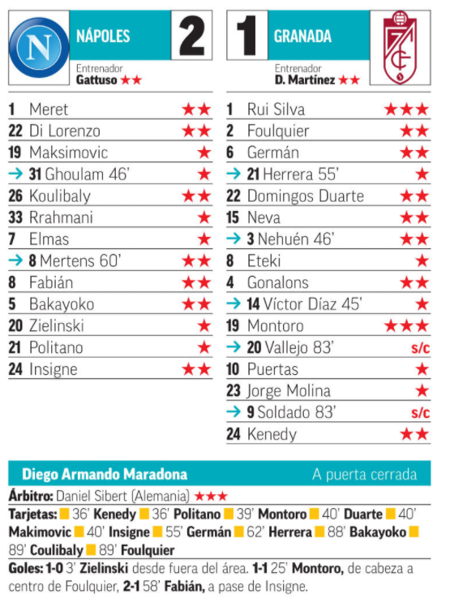

El Granada cae eliminado frente al Barcelona, pese a pelear y dar la cara
El Granada vuelve a hacer historia y ya está en los octavos de final de la Europa League. El sufrimiento se ha instalado como una constante en el camino de los de Diego Marínez, y ante el Nápoles no iba a ser diferente. A pesar de presentarse con personalidad en el Diego Armando Maradona, el guión se iba a torcer nada más comenzar. La primera pérdida en el centro del campo de los andaluces se traducía en el gol de Zielinski tras una conducción eléctrica y una definición letal para superar a Rui Silva y comprimir la eliminatoria. El tanto de los napolitanos podría haber inoculado el temor en los jugadores rojiblancos, pero en la enésima muestra de carácter de este equipo, el Granada se recompuso, se sacudió el polvo y retomó el plan inicial, como si el 0-0 siguiese inmutable en el marcador. Instalados en campo italiano, los de Diego Martínez trataron de ahuyentar al rival de su portería alejando el balón. Por su parte, sin la urgencia inicial, en Nápoles realizaba incursiones aisladas en busca del segundo gol en intentos estériles . Con el control recuperado, el Granada fue ambicioso, y lejos de atrincherarse buscó la portería de Meret, un planteamiento que recibió una merecida recompensa poco después con el tanto de Montoro que, con un cabezazo inapelable, sepultaba parte de las aspiraciones del Nápoles. Con poco que perder y con la obligación de marcar tres goles para poder obrar el milagro, los de Gattuso arrancaron el segundo acto volcados sobre el área rojiblanca, un asedio que, a pesar de las lesiones, no descompuso al Granada, firme como una legión romana en el campo de batalla, resistencia que se quebró por culpa de un pase filtrado que superó a la defensa y que aprovechó Fabián para reactivar a los napolitanos. El Nápoles vio posible la gesta y encerró al Granada sobre su área, pero con un instinto de supervivencia afilado, como le gusta a Diego Martínez, los rojiblancos aguantaron los embates locales hasta alcanzar el pitido final y el pase a octavos, añadiendo un capítulo más a la brillante historia de este equipo insaciable.
